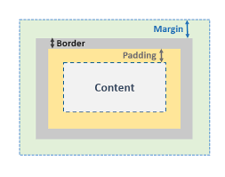
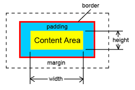
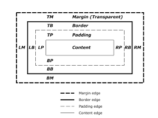

CSS Box Model
All HTML elements can be considered as boxes. In CSS, the term "box model" is used when talking about design and
layout.
The CSS box model is essentially a box that wraps around every HTML element. It consists of: margins, borders,
padding, and the actual content.
The image below illustrates the box model:

Explanation of the different parts:
Content - The content of the box, where text and images appear
Padding - Clears an area around the content. The padding is transparent
Border - A border that goes around the padding and content
Margin - Clears an area outside the border. The margin is transparent
So, the box model allows us to add a border around elements, and to define space between elements.
This text is the content of the box. We have added a 50px padding, 20px margin and a 15px
green border. Ut enim
ad minim veniam, quis nostrud exercitation ullamco laboris nisi ut aliquip ex ea commodo consequat. Duis aute irure
dolor in reprehenderit in voluptate velit esse cillum dolore eu fugiat nulla pariatur. Excepteur sint occaecat
cupidatat non proident, sunt in culpa qui officia deserunt mollit anim id est laborum.
Width and Height of an Element
In order to set the width and height of an element correctly in all browsers, you need to know how the box model
works.
Important: When you set the width and height properties of an element with CSS, you just
set the width and height of the content area.

To calculate the full size of an element, you must also add padding, borders and margins.
We show this feature and calculate the total width of the div element under the image so that its width is equal to
the image above:

The picture above is 350px wide. The total width of this element is also 350px.
Here is the calculation:
320px (width)
+ 20px (left + right padding)
+ 10px (left + right border)
+ 0px (left + right margin)
= 350px
The total width of an element should be calculated like this:
Total element width = width + left padding + right padding + left border + right border + left margin + right
margin
The total height of an element should be calculated like this:
Total element height = height + top padding + bottom padding + top border + bottom border + top margin +
bottom margin

CSS Box Sizing
The CSS box-sizing property allows us to include the padding and border in an element's total width and height.
Without the CSS box-sizing Property
By default, the width and height of an element is calculated like this:
width + padding + border = actual width of an element
height + padding + border = actual height of an element
 This means: When you set the width/height of an element, the element often appears bigger than you have set (because
the element's border and padding are added to the element's specified width/height).
This means: When you set the width/height of an element, the element often appears bigger than you have set (because
the element's border and padding are added to the element's specified width/height).
The following illustration shows two div-elements with the same specified width and height:
This div is smaller (width is 300px and height is 100px).
This div is bigger (width is also 300px and height is 100px).
The two div-elements above end up with different sizes in the result (because div2 has a padding specified).
The box-sizing property solves this problem.
With the CSS box-sizing Property
The box-sizing property allows us to include the padding and border in an element's total width and height.
If you set box-sizing: border-box; on an element padding and border are included in the width and height:
Both divs are the same size now!
Hooray!
Since the result of using the box-sizing: border-box; is so much better, many developers want all elements
on their pages to work this way.
The code below ensures that all elements are sized in this more intuitive way;
*{box-sizing: border-box;}
Many browsers already use box-sizing: border-box; for many form elements (but not all - which is why inputs and text
areas look different at width: 100%;).
Applying this to all elements is safe and wise:
Tip: If you remove the box-sizing property from the style element width of input(with=100%),
textarea, and submit button will go outside of the screen.